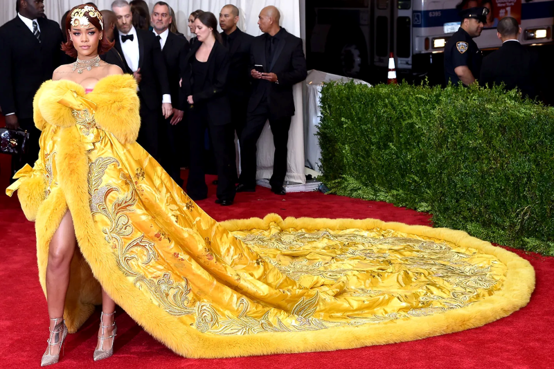

DESIGNS

FUN FACT:Virgil Abloh designed this dress and he actually received a Master degree in Architecture here at IIT and then became a very well known designer!
This is his page if you were interested in looking at his designs! He passed away and created a page where he shows all his work and gives steps on how to create your own brand!
Virgil Abloh's WebpageFree game page is where he gives all information for those who want to start a brand!
This is one of the best looks EVER! I have seen nothing that beats this dress. It was hand crafted by one Chinese woman which took her 2 years to complete.
This dress was designed by Guo Pei.